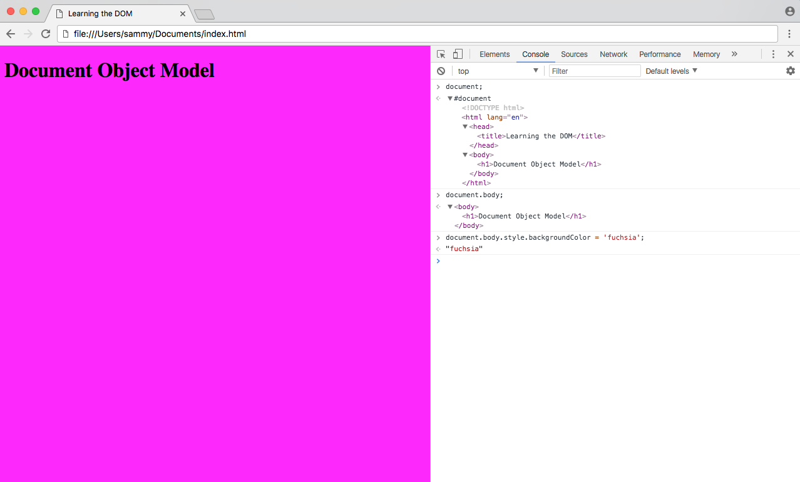

An image highlighting a JavaScript DOM code snippet
By the end of this tutorial, you'll be able to apply JavaScript more effectively in your web projects and understand its role in the world of websites.
The DOM is a Web API that allows developers to use programming logic to make changes to their HTML code. It's a reliable way to make changes that turn static websites into dynamic ones. It's an important topic in web development because the DOM serves as the initial use of JavaScript in the browser. HTML code isn’t considered part of the DOM until its parsed by the browser. To see what happens to your HTML code when this parsing happens, copy your code from the body tag and paste it here (within the box with the title 'Markup to test' after the three dots).
In order to effectively understand the DOM and how it relates to working with the web, it is necessary to have an existing knowledge of HTML and CSS. It is also beneficial to have familiarity with fundamental JavaScript syntax and code structure.
At the most basic level, a website consists of an HTML document. The browser that you use to view the website is a program that interprets HTML and CSS and renders the style, content, and structure into the page that you see. In addition to parsing the style and structure of the HTML and CSS, the browser creates a representation of the document known as the Document Object Model. This model allows JavaScript to access the text content and elements of the website document as objects. JavaScript is an interactive language, and it is easier to understand new concepts by doing. Let's create a very basic website. Create an index.html file and save it in a new project directory.
< !DOCTYPE html >
< html lang="en" >
< head >
< title > Learning the DOM < /title >
< /head >
< body >
< h1 > Document Object Model < /h1 >
< /body >
< /html >
The document object is a built-in object that has many properties and methods that we can use to access and modify websites. In order to understand how to work with the DOM, you must understand how objects work in JavaScript. Review Understanding Objects in JavaScript if you don't feel comfortable with the concept of objects.
In Developer Tools on index.html, move to the Console tab. Type document into the console and press ENTER. You will see that what is output is the same as what you see in the Elements tab.
Currently, with this example, it seems that HTML source code and the DOM are the exact same thing. There are two instances in which the browser-generated DOM will be different than HTML source code:
Let’s demonstrate how the DOM can be modified by client-side JavaScript. Type the following into the console:
document.body;
The console will respond with this output:
output
< body >
< h1 > Document Object Model < /h1 >
< body >
document is an object, body is a property of that object that we have accessed with dot notation. Submitting document.body to the console outputs the body element and everything inside of it. In the console, we can change some of the live properties of the body object on this website. We'll edit the style attribute, changing the background color to fuchsia. Type this into the console:
document.body.style.backgroundColor = 'fuchsia';
After typing and submitting the above code, you’ll see the live update to the site, as the background color changes.
Switching to the Elements tab, or typing document.body into the console again, you will see that the DOM has changed.
Output
< body style="background-color: fuchsia;" >
< h1 > Document Object Model < h1 >
< /body >
The JavaScript code we typed, assigning fuchsia to the background color of the body, is now a part of the DOM.
In this tutorial, we defined the DOM, accessed the document object, used JavaScript and the console to update a property of the document object, and went over the difference between HTML source code and the DOM. For more in-depth information on the DOM, review the Document Object Model (DOM) page on the Mozilla Developer Network.